Обо мне
Привет! Меня зовут Абай Әмірбекұлы. Я студент КБТУ, специальность it management. Еще я занимаюсь предпринимательством и являюсь основателем компании Zhumusker, которая занимается предоставлением линейного персонала для складов и небольших заказов. Сейчас хочу рассказать кем работал перед стать предпринимателем
До универа закончил школу на золотую медаль и на ЕНТ набрал 117 баллов
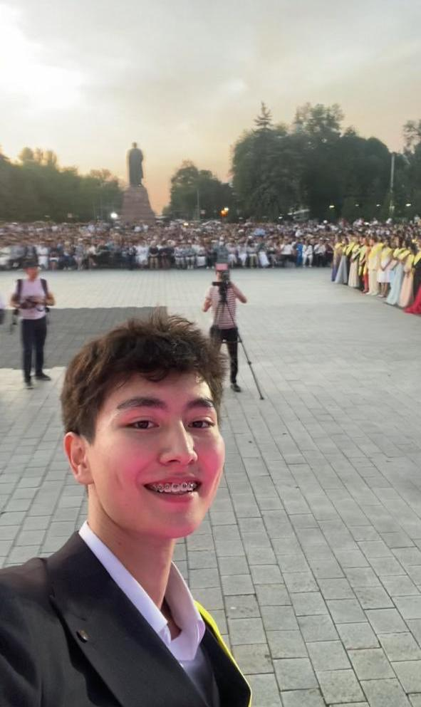 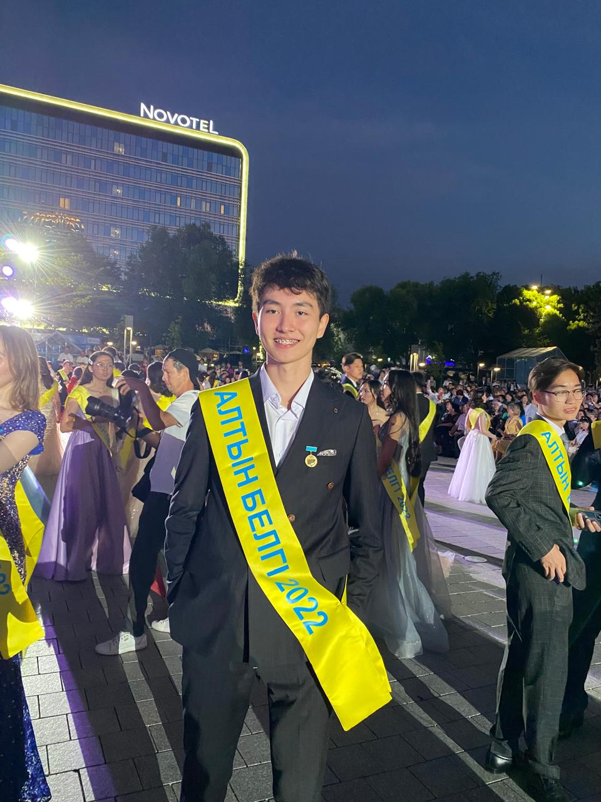Потом после школы надо было работать и зарабатывать деньги и пошел работать офицантом.
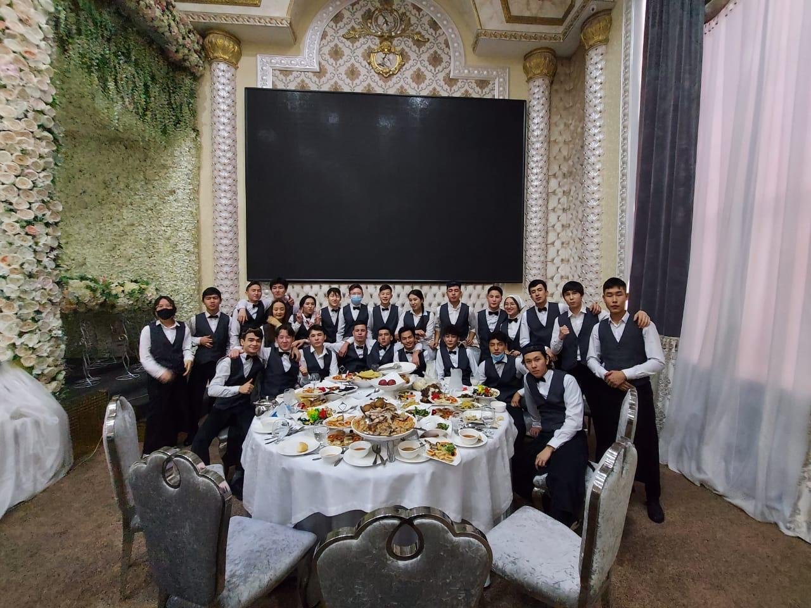Низкая зароботанная плата меня и много физической работы заставило меня купить мопед в кредит и стать курьером
 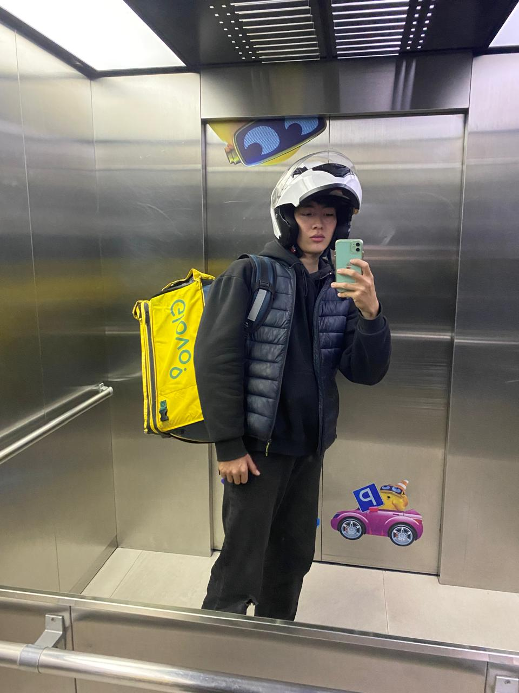
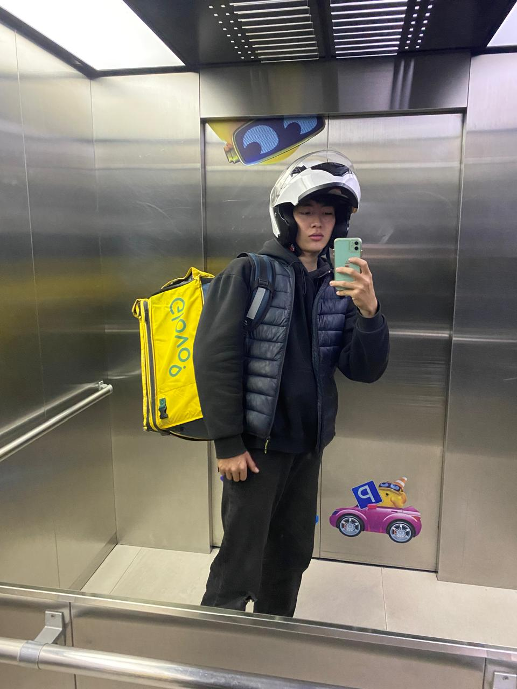
Мопед много ломался и искал другие работы надо было закрывать кредит и нашел работу яндекс самокат скаут и там делал тоже доставку чтобы как то жить
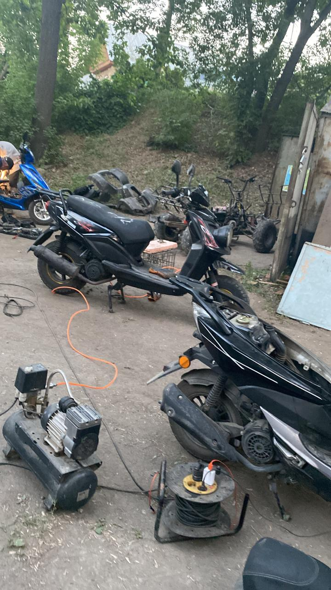
Иногда подрабатывал охраной, но ничего из этого не давал мне чувство удовольствия хотел большего и развиваться
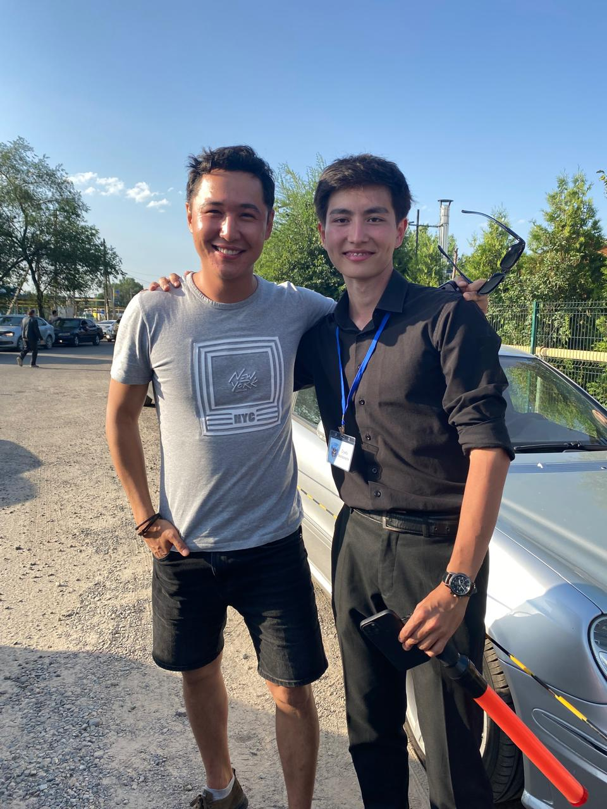 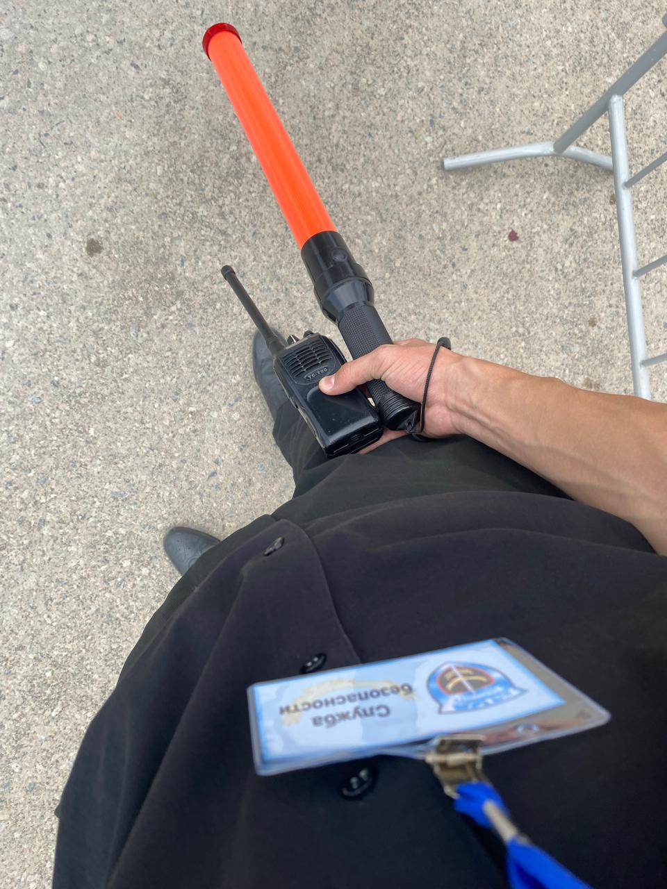Начал развиваться этим летом, искал нишу , но ниша меня нашла сама , я работал в аутсорсинговой компаний грузчиком комплектовщиком и начал изучать эту сферу , идея была очень хорошей и первой неделе дала уже первые прибыли и дальше буду развивать свои бизнес и сделать большую айти компанию из этого
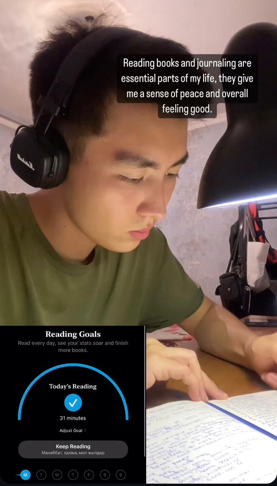 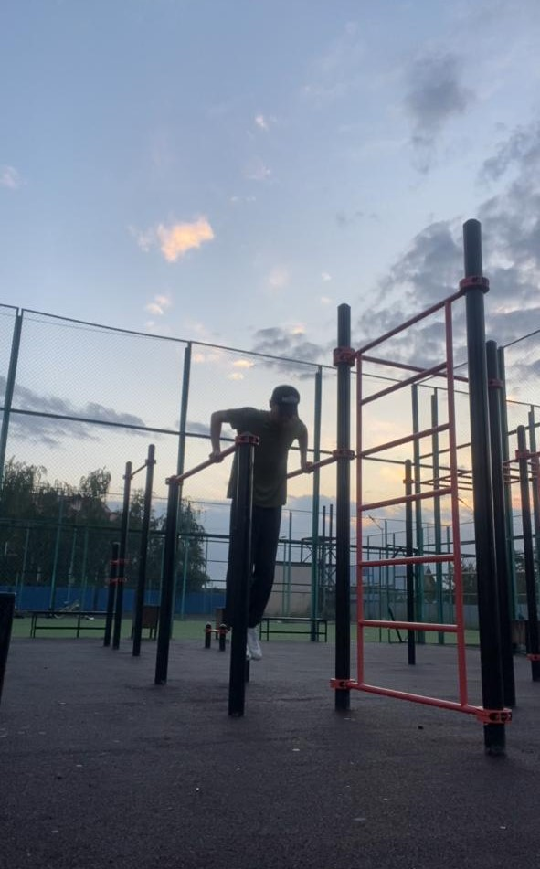В этой сфере я работаю уже более месяца, и я стремлюсь улучшить процессы складирования и снизить затраты на персонал для моих клиентов.
В скором хочу сделать свою платформу или приложение на смартфоне аналогичным казахстанским EASYTAP либо российским GIGWORK.
Я активно развиваю свои навыки в области аутсорсинга, IT управления и кибербезопасности, и также принимаю участие в различных проектах, связанных с этими направлениями.
До этого я пользовался конструктором Tilda, платил подписку за месяц пользования с данными клиентов:
web site here clickПроекты
Мои проекты связаны с оптимизацией логистики, эффективностью управления на складах и аутсорсингом сотрудников. Недавно я начал работать над презентацией, чтобы продвигать свои услуги и показывать, как я могу помочь клиентам улучшить их складские операции.
Хобби
Я иногда снимаю тик токи и рилсы и они собирают хорошие просмотры думаю в будущем буду использовать чтобы дать толчок для начала айти бизнеса и для личного бренда
 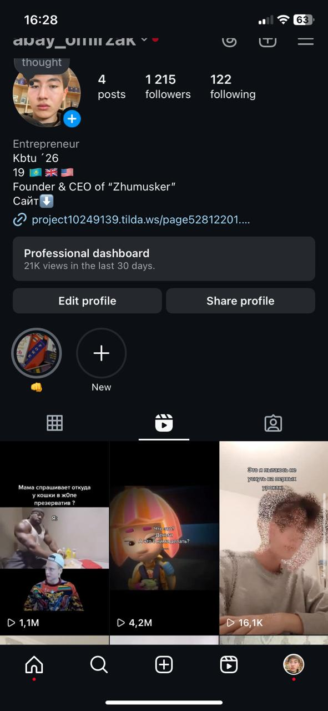
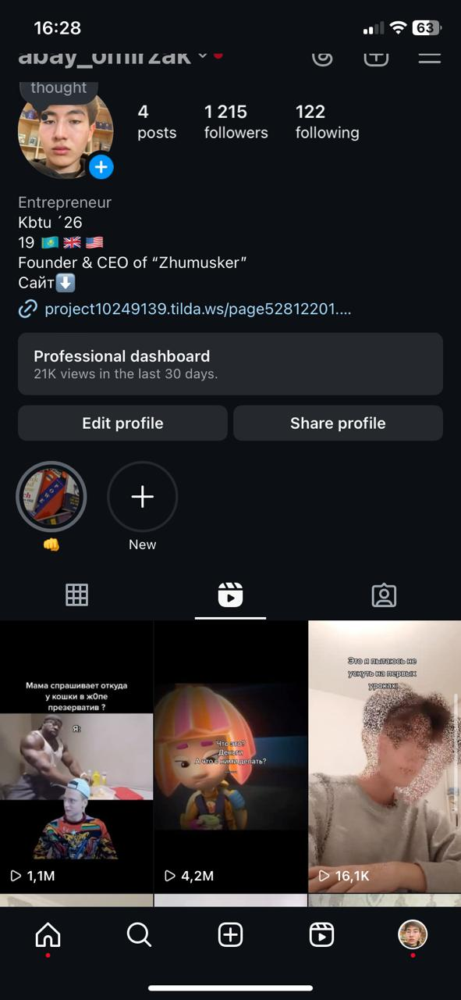
Свободное время хожу в зал поднимаю веса и ММА для развития тела и духа
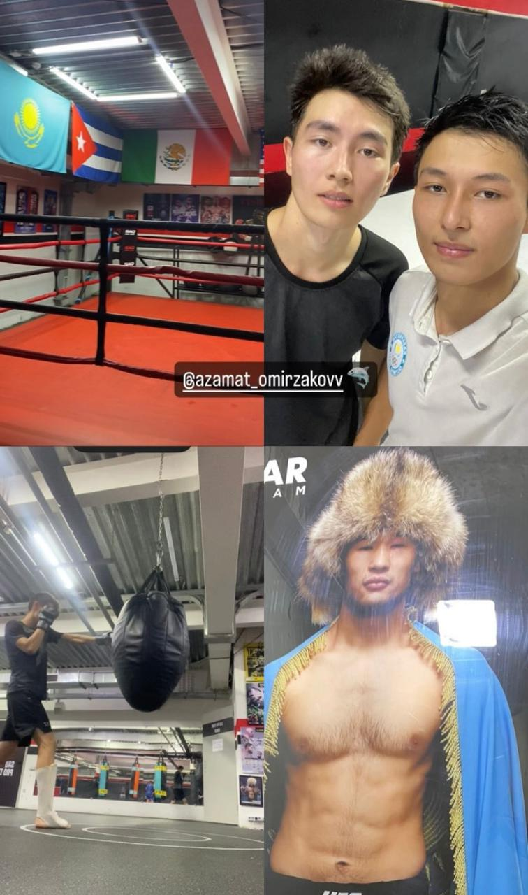 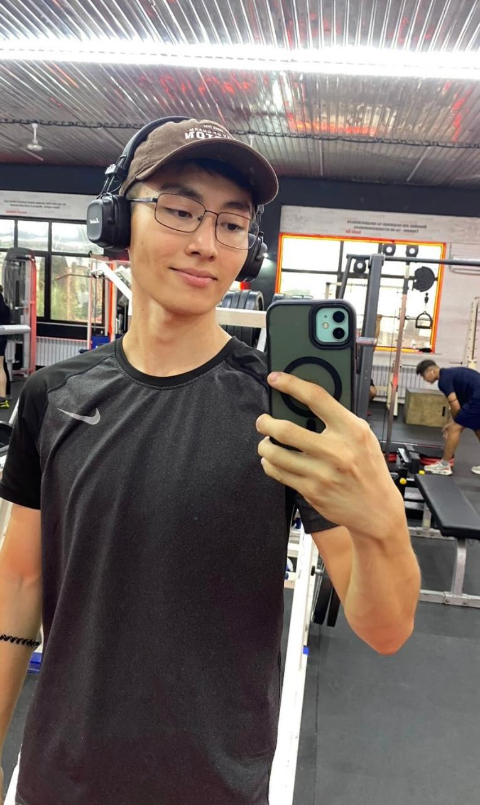 Написать в WhatsAppОставьте свои данные по поводу сорудничество
Контакты
Телефон: +7 (708) 283-3287